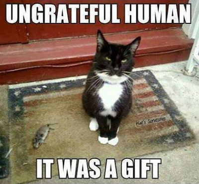
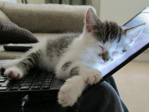

Cat-ology:
Cat-ology:Why Is My Cat…?
A troubleshooting guide to the curious and sometimes destructive behaviors of cats
- Purring
- Staring at me
- Nibbling on my head
- Blinking slowly at me
- Wagging their tail
- Peeing outside the litter box
- Bringing me dead animals
- Kneading my blanket
- Hiding
- Sitting on my keyboard while I’m trying to type this
Purring
Your cat is purring for 1 of 2 reasons. Most likely it is because they are extremely happy, relaxed, and comfortable. This usually happens when you scratch their head and pet them, but some cats purr when they are eating, as well. Mothers purr to lure their kittens to them to nurse. In the wild this works to their advantage because purrs are usually not heard by predators - as opposed to cries. The kittens purr back in response. Some kittens never grow out of the purring while eating stage. Some cats will simply purr when they see a human because they have learned that it solicits attention and possibly food. The other reason may be because they are in a lot of pain. Purring releases endorphins, which reduces pain. The low frequency of purring also promotes healing.
Back to TopStaring at me
This could be for a number of reasons. Perhaps your cat is hungry and is trying to put thoughts of feeding her into your mind. Maybe they are bored and find you interesting. Another reason could be that your cat is trying to read the situation. For example, a new piece of furniture is added to your house that the cat is unsure of. Your cat may look to you and read your body language to find out if this new object is something to worry about. If you are calm, then your cat will feel like they should be calm. If you look freaked out, then your cat will be too.
Back to TopNibbling on my head
Congratulations! Your cat loves you so much that they want to groom you. Just like cats do to other cats, this is a sign of love and affection. They also may think that you do not smell very good and want to put their scent on you.
Back to TopBlinking slowly at me
This is your cats way of telling you that they love and trust you. To felines, closing their eyes when with another is the ultimate sign of trust. You can also do this back to them to show them that you are not a threat. This is particularly useful when you have a cat is that is frightened.
Back to TopWagging their tail
This is usually something dog-people say, as in: Look! Fluffy is having so much fun, she is wagging her tail! However, if a cat's tail is thumping back and forth a lot this is actually a sign of discontent - usually paired with an annoyed facial expression and possibly growls. A cat that is happy has a tail that is upright, possibly swaying slowly if laying down. If the tail is puffed then the cat is spooked. If the cat is sitting and the end is twitching, they are interested - usually when watching a bird outside. If the tail is between their legs, then the cat is scared and submissive - a characteristic they actually have in common with dogs.
Back to TopPeeing outside the litter box
Depending on where the cat is urinating, this could mean different things. If the location is right outside of the litter box, then they may be telling you that their litter box is not clean enough for them. If they are peeing on your bed they may be telling you that they have anxiety about something - perhaps separation anxiety, as in they need more attention. If kitty is urinating only on a specific human's things then they are telling you that this person stresses them out. For example, the cat only pees on the 7 year old daughter's jackets, bed, shoes, etc. Come to find out Sally has been dressing Fluffy up in doll clothes. Cats are very emotional creatures, try to tune into their emotions and figure out what is bothering them. Whatever you do, no matter how hard it may be, NEVER scold kitty for peeing outside of the cat box, this only raises their anxiety level and leads to more accidents.
Back to TopBringing me dead animals
There are conflicting schools of thought on this topic, but the answer could very well be a mixture of both. One idea is that your cat loves you and is bringing you a present, a special treat just for you. Aren't you lucky?? Another idea is that the cat believes that you are an inferior hunter and need a lesson in how it's done. Either way, do not be surprised by a cat killing mice and birds - it is deeply rooted in their nature. Praise them and then clean it up when they are no longer around, so as not to offend kitty.
Back to TopKneading my blanket
Called so due to the resemblance of kneading dough. Usually paired with purring, a cat kneads when it is very happy, content, and relaxed because it associates the motion with when it was a kitten nursing from its mother.
Back to TopHiding
A cat may be hiding for several reasons. Are there a lot of loud guests over? He may not like that. Maybe he wants to be alone, in a quiet space to take a nap. Did you get his cat carrier out? He probably associates that with the vet, which freaks him out. Another reason a cat may be hiding is because he is hurt or is ill. Cats will hide during this time because they feel vulnerable and it is their instinct to hide from predators.
Back to TopSitting on my keyboard while I'm trying to type this
 Cats love warmth. Keyboards, like most electronics, get pretty warm. However, if your cat is walking back and forth in front of the computer screen and is not necessarily sitting, then this means they want your attention. So, stop whatever you are doing and give him/her attention!